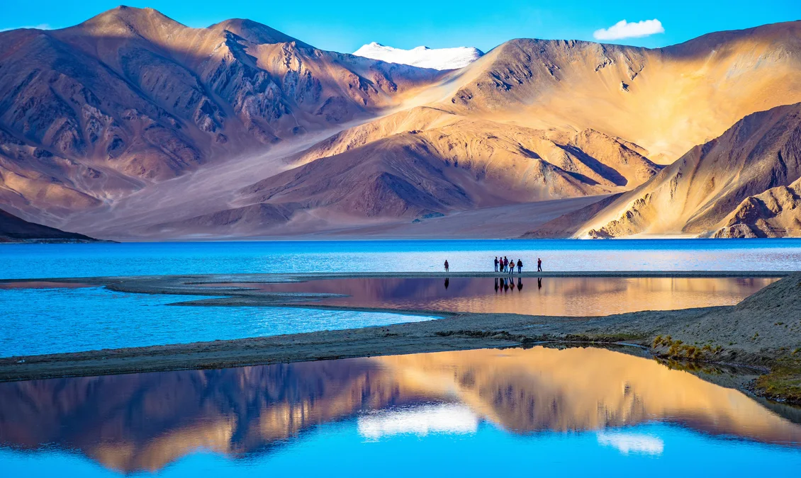

Leh
LEH
LAND OF LAMAS
Located in the Ladakh region of Jammu and Kashmir, Leh is known for its stunning scenic locales, Buddhist temples and pristine environment. Due to the strong influence of Tibetan Buddhism, Leh is also known as Little Tibet or the Land of Lamas. Barren mountain s with brightly painted gompas (or monasteries), fluttering prayer flags, rocky ridges, tiny settlements and the Indus River add to the overall charm of the region.Set amidst the epic Himalayas, Ladakh is a rustic and heavenly beautiful travel destination. The rugged valleys and mountains, winding roads coupled with the vibrant cultural life maintain the exuberance and charm of this region. The iconic Magnetic Hill, the turquoise coloured Pangong Lake, the confluence of two mystical rivers, ancient and awe inspiring monasteries and the highest passes are a few of the marvelous attractions of Leh and Ladakh in general. The wide array of trekking routes will satiate your soul and enrich the senses. The moon like desert mountains continue to be an exceptional destination for adventure seekers and admirers of Buddhism and phenomenal mountain vistas. So, pack some travel essentials with you to explore the most enthralling destination of India and bring back souvenirs of endless memories with you.
CENTER OF ATTRACTIONS
-

PANGONG LAKE
The Pangong Lake or the Pangong Tso is one of the highest altitude lakes in the world and is famed for its colour changing water, from blue to red and green.From camping to lakeside bonfire, a wide variety of activities can be enjoyed here. During the winter months, the lake can be seen completely frozen, which is a delightful sight in itself.
-

NUBRA VALLEY
Nubra valley, also known as Dumra is one of the most famous and most beautiful destinations in Leh, Ladakh. From hot springs to river streams and from age-old monasteries to remote villages, It has everything which an explorer seeks. Being a high altitude destination, the valley has many double humped camels, riding which can be a delight.
-

MAGNETIC HILL
The famous Magnetic Hill of Ladakh is a cyclops hill, a place where vehicles seem to have defied the force of gravity and move upwards when parked at a particular marked location here. It is 7.5 km southeast of Nimmoo and 26.5 km west of Leh on Srinagar-Ladakh road.Located on the Leh-Kargil-Baltic National Highway, this place remains a mystery even today ,as many tourists are awestruck to witness the magical experience.
-

KHARDUNGA LA
Gateway to the Shyok and Nubra Valley, the Khardungla Pass is strategically a very important landmass for the country. Famous for being the highest motorable pass with an elevation of 5359 metres, the pass is a favourite spot among the bike riders and adventure lovers. The pass has mighty mountains on both of its sides, which further offer the most dramatic views one can imagine.
EXPERIENCES
Posted on June 18, 2013 by sudhagee
If you are reading this review, then you probably already know something about Ladakh, or have at least seen photos. It's one of the most breathtaking places on earth. But there are a couple noteworthy things that i hadn't known about before, but learned on this trip. Ladakh is one of the cleanest places in India! No offense to Indians from other areas, but Ladakh takes the gold medal for cleanliness! Because Ladakh is so remote, there is a sense of not wasting anything or discarding anything haphazardly. Ladakhis are naturally conservation-minded people. Everything gets re-used, and therefore there is very little garbage and litter on the streets. By the same token, Ladakhis are very ecologically aware. Water is a precious commodity in the high altitude desert, and rivers and water sources are well cared for. In other parts of India, rivers and streams become a dumping ground for waste, but in Ladakh it is quite the opposite. I was very impressed that Leh has a water bottle filling station geared toward tourists that allows you to fill your bottle with boiled UV treated water for only 7 Rps. This is half the price of a bottle of mineral water, and it doesn't lead to another empty plastic bottle being discarded on the streets.
TREKKING
3 IDIOTS SHOOTING POINT
PEOPLE